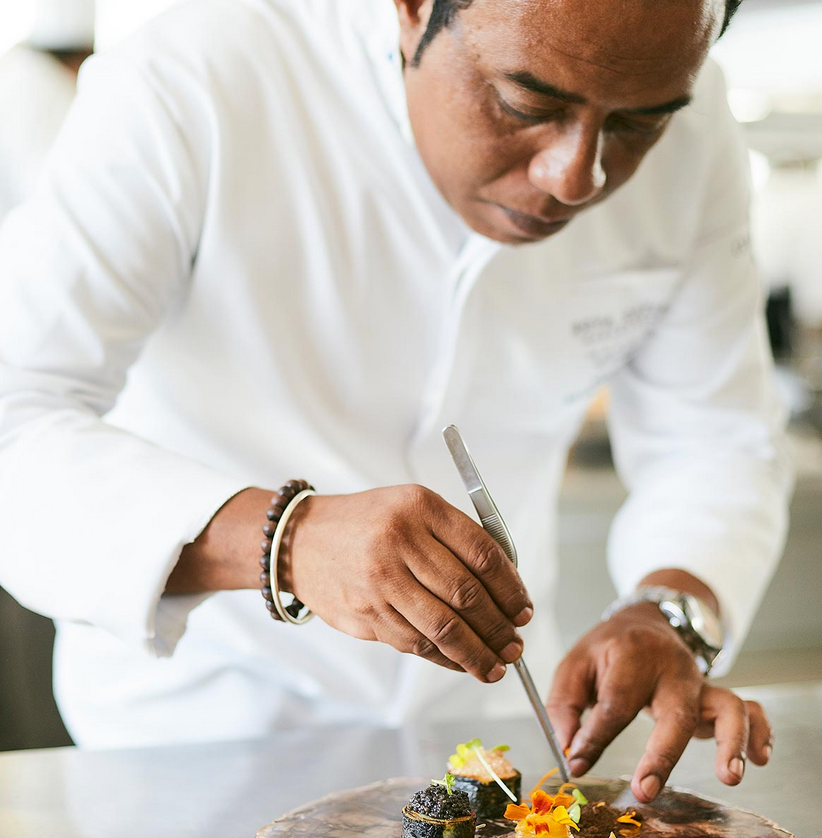
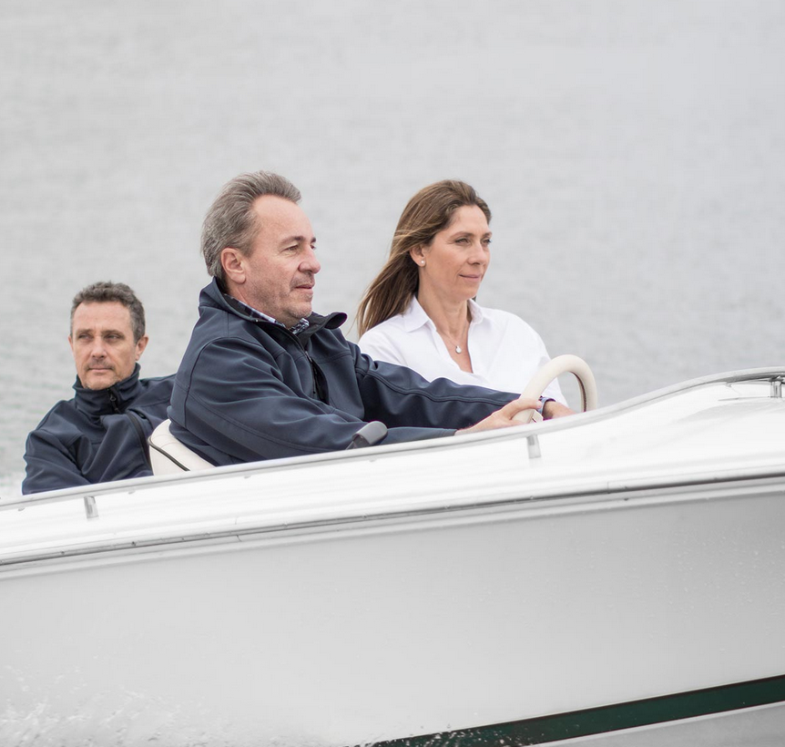
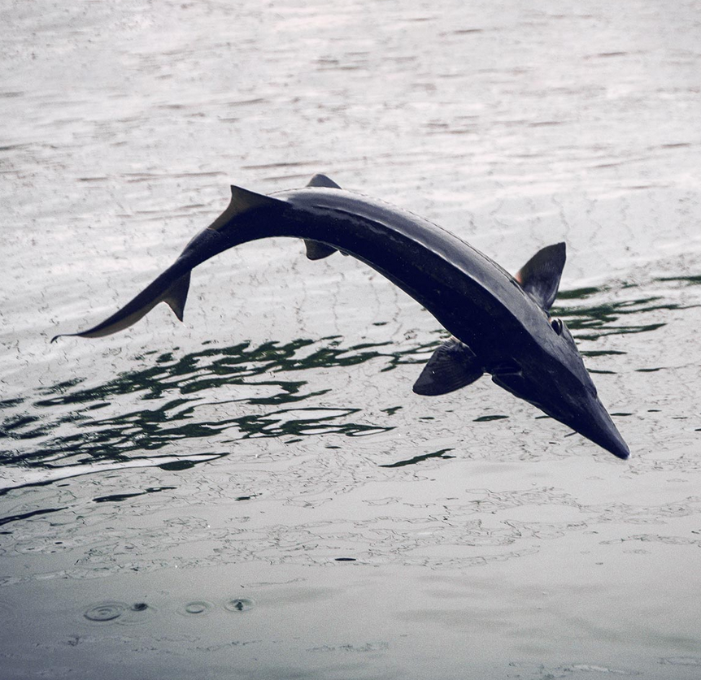
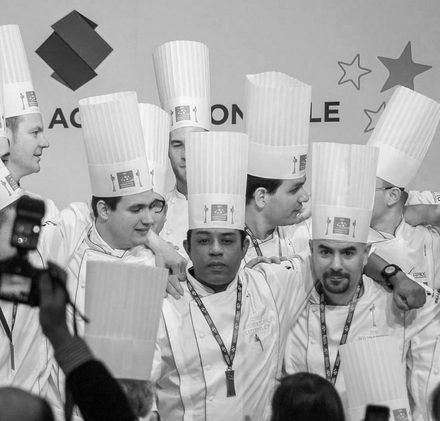

Le Chef
L’histoire d’un homme
Lalaina Ravelomanana, un Chef Malgache autodidacte qui n’a peur de rien et désireux de toujours proposer le meilleur. Le Chef le plus réputé de Madagascar, disciple d’Auguste Escoffier ayant d’ores et déjà reçu 9 prix internationaux, honoré en 2010 d’être le Premier Chef Africain intronisé à la prestigieuse Académie Culinaire de France, et ayant monté de toute pièce un restaurant gastronomique d’exception : le Marais Restaurant.

L'Histoire d'un Défi
Lalaina, avec plus de onze années d'expérience dans le restaurant le plus réputé de Tananarive, capitale de la Grande Île, décide de participer à la Coupe du Monde des Traiteurs, l'International Catering Cup ; un concours de gastronomie haut de gamme qui vise à réaliser un repas majestueux au travers de quatre plats et la mise en lumière d'un buffet. Un concours qui demande 1 an de préparation et la recherche de sponsors.
L’histoire d’un défi
Lalaina, avec plus de onze années d’expérience dans le restaurant le plus réputé de Tananarive, capitale de la Grande Île, décide de participer à la Coupe du Monde des Traiteurs, l’International Catering Cup ; un concours de gastronomie haut de gamme qui vise à réaliser un repas majestueux au travers de quatre plats et la mise en lumière d’un buffet. Un concours qui demande 1 an de préparation et la recherche de sponsors.

L’histoire d’une rencontre
C’est alors que Lalaina Ravelomanana fait la rencontre d’Alexandre Guerrier, de Christophe et de Delphyne Dabezies, trois entrepreneurs français dynamiques et passionnés installés depuis la fin des années 90 à Madagascar, spécialistes de la confection de vêtements de luxe pour les Maisons les plus prestigieuses du monde ; et plus récemment fondateurs de la Maison Rova Caviar Madagascar, le premier Caviar d’Afrique et de l’Océan Indien.

Un pari gagnant
En 2015, Lalaina Ravelomanana reçoit le Prix du « Plus Beau Buffet Traiteur du Monde » de l’International Catering Cup. Une récompense qui se confirmera en 2017 avec l’honneur d’être sélectionné comme coach et de monter une équipe qui va concourir en finale. Un défi de former à l’excellence qui va suivre Lalaina dans ses projets futurs.
